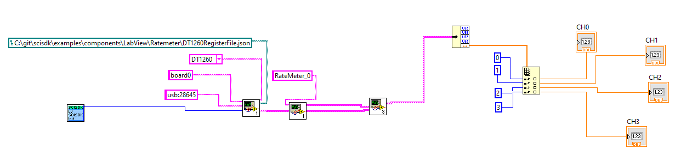

The rate meter is a simple component that allow to measure the rate of incoming signal The integration time is configured by SciCompiler at Compile Time. If the inegration time (configured in clock cycles) is multiple of clock period, the measure can be already considered in Hz, KHz, MHz ... For example if clock frequency is 125MHz, and integration time is 125e6, the measure is in Hz, if integration time is 125e3, the measure is in KHz, if integration time is 125, the measure is in MHz.
This component support up to 256 channels. The integration time is common to all channels. The number in tha data field is the number of transition L->H of the i-th input signal in the integration time.
Parameters
The following parameters can be configured:
| Parameter | Acces Mode | Description | Default value |
| buffer_type | R | type of the buffer: (SCISDK_RM_RAW_BUFFER) | |
Commands
The are no commands for this component
Output data Format
The ToF spectrum uses the same data structures of the energy spectrum
Decoded Data
The data output structure is the following:
typedef struct {
uint32_t magic;
double *data;
struct {
uint32_t buffer_size;
uint32_t valid_data;
uint32_t nchannels;
}info;
Rate Meter data structure.
Definition: scisdk_defines.h:218
The magic field is a 32 bit value that identify the data format. The data field is a pointer to the data buffer. The data buffer is an array of 32 bit values. The number of elements in the array is defined by the total_bins field. The valid_bins field is the number of bins that contains data. The valid_bins field is always equal to total_bins field.
Data in the data array are the rate of the i-th channel in the integration time.
| Data Format |
| ch 0 |
| ch 1 |
| ch 2 |
| ... |
| ch n |
Basic Examples
The following example shows how to use the Rate Meter component.
C
printf("Error allocating buffer\n");
return -1;
}
for (int i=0;i<ob->info.nchannels;i++) {
printf("ch %d: %f\n", i, ob->data[i]);
}
....
#define NI_OK
Definition: NIErrorCode.h:8
SCISDK_DLL_API int SCISDK_AllocateBuffer(char *Path, T_BUFFER_TYPE buffer_type, void **buffer, void *handle)
Allocate a buffer to be used to store data from the board for the specific Memory Mapped Componet (os...
SCISDK_DLL_API int SCISDK_FreeBuffer(char *Path, int buffer_type, void **buffer, void *handle)
Release the memory allocated by SCISDK_AllocateBuffer() or SCISDK_AllocateBufferSize()
SCISDK_DLL_API int SCISDK_ReadData(char *Path, void *buffer, void *handle)
Read data from the board for the specific Memory Mapped Componet (oscilloscope, spectrum,...
@ T_BUFFER_TYPE_RAW
Definition: scisdk_defines.h:229
C++
{c++}
SCISDK_RM_RAW_BUFFER *obRm;
int res = sdk.AllocateBuffer("board0:/MMCComponents/RateMeter_0", T_BUFFER_TYPE_RAW, (void**)&obRm, _sdk);
if (res != NI_OK) {
cout << "Error allocating buffer" << endl;
return -1;
}
sdk.ReadData("board0:/MMCComponents/RateMeter_0", (void *)obRm, _sdk);
for (int i=0;i<obRm->info.nchannels;i++) {
cout << "ch " << i << ": " << obRm->data[i] << endl;
}
....
sdk.FreeBuffer("board0:/MMCComponents/RateMeter_0", T_BUFFER_TYPE_RAW, (void**)&obRm, _sdk);
Python
res, obSpectrum = sdk.AllocateBuffer("board0:/MMCComponents/RateMeter_0", 0)
if res != 0:
print("Error allocating buffer")
return -1
res, obRm = sdk.ReadData("board0:/MMCComponents/RateMeter_0", obRm)
for i in range(obRm.info.nchannels):
print("ch %d: %f" % (i, obRm.data[i]))
....
sdk.FreeBuffer("board0:/MMCComponents/RateMeter_0", 0, obRm)
C Sharp
SCISDK_RM_RAW_BUFFER obRm;
int res = sdk.AllocateBuffer("board0:/MMCComponents/RateMeter_0", T_BUFFER_TYPE_RAW, ref obRm);
if (res != 0) {
Console.WriteLine("Error allocating buffer");
return -1;
}
dk.ReadData("board0:/MMCComponents/RateMeter_0", ref obRm);
for (int i=0;i<obRm.info.nchannels;i++) {
Console.WriteLine("ch {0}: {1}", i, obRm.data[i]);
}
....
sdk.FreeBuffer("board0:/MMCComponents/RateMeter_0", T_BUFFER_TYPE_RAW, ref obRm);
VB.NET
Dim obRm As SCISDK_RM_RAW_BUFFER
Dim res As Integer = sdk.AllocateBuffer("board0:/MMCComponents/RateMeter_0", T_BUFFER_TYPE_RAW, obRm)
If res <> 0 Then
Console.WriteLine("Error allocating buffer")
Return -1
End If
sdk.ReadData("board0:/MMCComponents/RateMeter_0", obRm)
For i As Integer = 0 To obRm.info.nchannels - 1
Console.WriteLine("ch {0}: {1}", i, obRm.data(i))
....
sdk.FreeBuffer("board0:/MMCComponents/RateMeter_0", T_BUFFER_TYPE_RAW, obRm)
JAVA
Ref<RMRawBuffer> buf = new Ref<>(new RMRawBuffer());
int res = sdk.AllocateBuffer("board0:/MMCComponents/RateMeter_0", buf);
if(res == 0) {
res = sdk.ReadData("board0:/MMCComponents/RateMeter_0", buf);
if (res == 0) {
System.out.println("-------------------");
for (int i = 0; i < buf.get().GetData().length; i++) {
System.out.println(buf.get().GetData()[i]);
}
} else {
Ref<String> error_description = new Ref<>("");
sdk.s_error(res, error_description);
System.out.println("ERROR DESCRIPTION: " + error_description.get());
}
res = sdk.FreeBuffer("board0:/MMCComponents/RateMeter_0", buf);
}
Labview

You can find the labview file for this example here